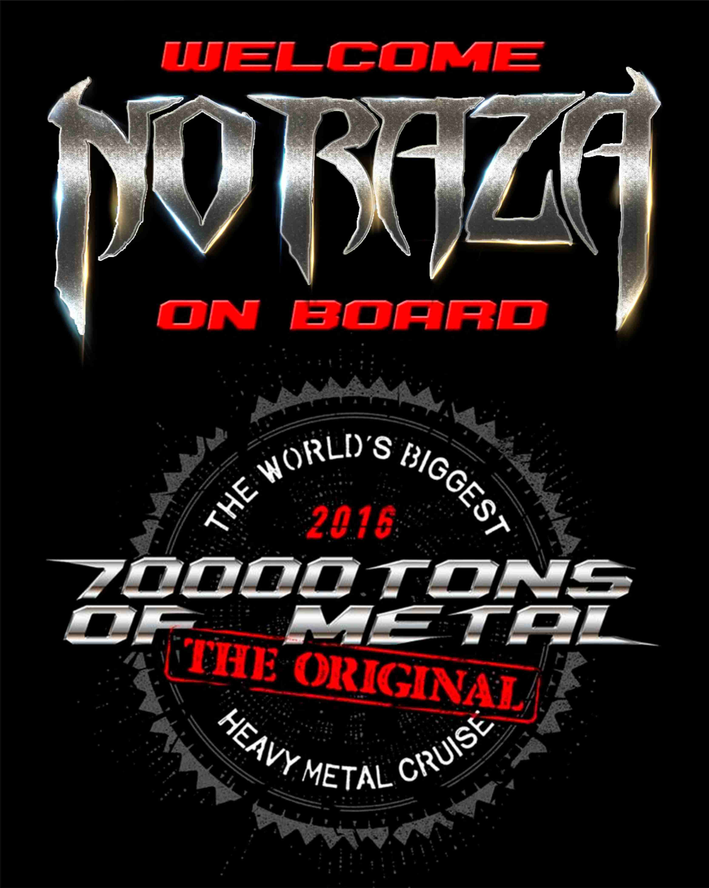

It is a great honor to have been invited on board to The Original, The World's Biggest Heavy Metal Cruise...
Are you ready for headbanging your skulls on board?

NO RAZA en 70000tons OF METAL, es un gran honor haber sido invitados abordo del crucero más grande de heavy metal en el mundo...
Preparados para mover sus cráneos a bordo?
" in North America
European edition of the album "When Chaos Reigns" by No Raza!
Novelty of the Moscow label GS Production from Colombians the No Raza! According to the vocalist of team Juan Guillermo Cano, to wait absolutely not long!
"Columbian Death Metal band No Raza announces the release of the latest album "When Chaos Reigns" by the european version digipack through the Russian label GS Productions. Soon we will be reporting dates for this great release!"
The release promises impressing artwork, squall of lethal power, high level knowledge of instruments and of course the Latin American sharpness!